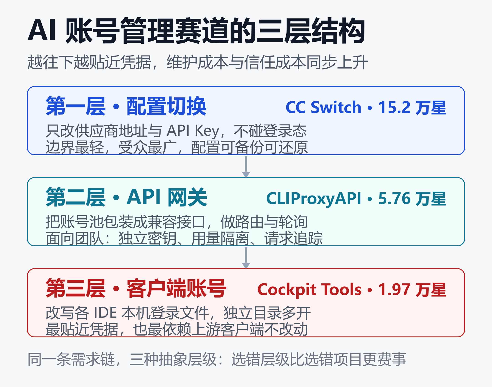
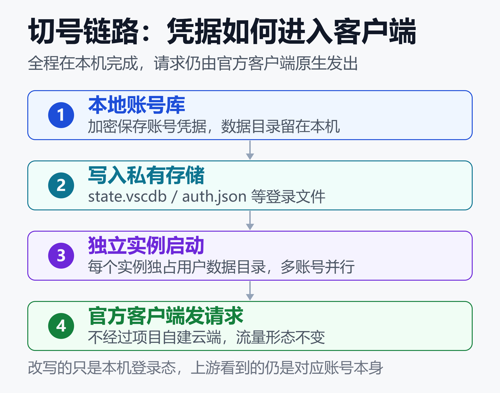

CC Switch 15 万星、Cockpit Tools 近 2 万星：AI 账号管理赛道到底在卷什么
15.2 万对 1.97 万，差了近八倍。这是 2026 年 11 月 5 日 GitHub 上两个开源项目的 Star 数：CC Switch 与 Cockpit Tools。
但另一组数字是反过来的。Cockpit Tools 261 个发布版本的桌面安装包，累计被下载 2,162,516 次，最近 30 个版本就占 647,021 次。Star 少得多的那一方，被真实安装得更频繁。
两个项目都被归进"AI 编程账号管理"，做的却不是同一件事。把它们放在一起看，能看清一条被低估的赛道：当 AI 编程工具从卖软件变成按账号卖配额，围绕"谁能用、用多少、怎么换"长出了一整套中间层。
一、两个项目，两组数字
| 指标 | CC Switch | Cockpit |
|---|---|---|
| Star 数 | 152,023 | 19,738 |
| 主语言 | Rust | Rust |
| 许可证 | MIT | 未被识别 |
| 发布版本 | 未统计 | 261 个 |
| 安装包下载 | 未统计 | 216 万次 |
口径要先说清：Star 是关注度，下载计数是 GitHub Release 的资产下载次数，包含自动更新器反复拉取，不等于独立用户数。把两者并列，不是为了比高低，而是为了说明一件事。
在这个赛道里，被讨论最多的项目和被天天打开的项目，可以不是同一个。前者赢在边界通用，后者赢在需求刚性。
Cockpit Tools 建仓于 2026 年 1 月 16 日，1 月 21 日发出 v0.1.0，到 11 月 1 日的 v1.3.78 共 261 个版本，源码版本号已走到 1.3.79。
九个月里积累了 1,772 次 Fork、986 个开放议题和约 110 位贡献者。
二、赛道其实分了三层

这张图把赛道拆成三层：最上层切配置，中间把账号转成 API，最下层直接接管官方客户端的登录态。越往下，离凭据越近，维护成本和风险也越高。
第一层：配置切换
CC Switch 解决的是"改配置文件"：把 Claude Code、Codex、Gemini CLI、OpenCode 等工具的 Provider、Base URL、API Key 收进一个界面，切换时覆写对应配置。
它不碰订阅账号的登录态，也不改写 IDE 的内部数据库。
边界窄带来两个结果。配置是明文、可备份、可还原，出问题删掉文件就能回到原点；受众则覆盖所有用 CLI 的开发者，不分付费还是免费。MIT 许可、跨平台、上手门槛低，Star 数因此走到 15 万级。
这一层卷的是覆盖面与配置一致性：支持多少工具、多少供应商预设、能否统一管理 MCP 与 Skills、备份是否可靠。
第二层：账号池转 API 网关
CLIProxyAPI、OmniRoute、9router 走的是另一条路：把多个账号或多个上游包装成 OpenAI、Anthropic、Gemini 兼容的统一入口，做轮询、路由和失败回退。
同一时点的 Star 数分别是 CLIProxyAPI 5.76 万、OmniRoute 8.47 万、9router 3.2 万。这一层的典型用户是团队和自建服务，要的是独立 API Key、用量隔离、请求级追踪和多用户管理后台。
网关层不改变客户端登录的是谁，只改变请求从哪里出去、由哪个账号承接。它比配置层重，需要部署与运维，但换来了服务端的可治理性。
第三层：官方账号与客户端实例
Cockpit Tools 和 Antigravity-Manager 落在最下面一层：不改接口，改的是各 IDE 在本机保存的登录状态。前者 1.97 万星，后者 3.28 万星。
这类工具直接读写 state.vscdb、auth.json、credentials.json 等客户端私有文件，再给每个实例分配独立用户数据目录，让多个账号在同一台机器上并行运行。请求仍从官方客户端原生发出。
它比前两层都重，因为它要跟着十几个客户端的私有格式一起变化。
三、15 万星买的是"轻"，216 万次下载买的是"额度"
CC Switch 的轻量不是功能少，而是边界清晰。它管理的是配置，而配置是开发者本来就要手动改的东西，工具只是把散落的编辑动作收拢到一个界面。
Cockpit Tools 碰的是配额。AI 编程工具普遍按账号设置 5 小时窗口、周限额、积分或 Credit，额度按账号分发，不共享、不结转，不同模型的消耗速度还不一样。
手上账号一多，就必然出现三个问题：哪个号还有额度、什么时候重置、能不能同时跑几个项目。这不是效率偏好，是每天要做的调度决策。
它的功能清单正好对上这三点：16 个平台与客户端的账号状态看板、剩余配额与重置倒计时、一键切号、定时唤醒、多开实例。仓库描述里"充分利用不同账号的资源"说的就是这件事。
技术栈上，它是 Tauri v2 桌面应用：Rust 后端负责进程管理与凭据注入，React 19 与 TypeScript 负责界面，本地用 SQLite 存账号索引与实例元数据。敏感字段用 AES-256-GCM 加密并接入系统钥匙串。
账号数据主要落在 ~/.cockpit_tools，网络请求限于 OAuth、令牌刷新、配额查询和版本检查。本机 WebSocket 默认只监听 127.0.0.1:19528，供插件联动，不用时可以在设置里关掉。
2,162,516 次安装包下载可以理解为这种需求的规模：很多人不是来围观，是装上去每天切号用的。当然，这个数字含自动更新请求，不能当独立用户数读。
四、一天一版：把私有格式当接口用的代价
261 个版本摊在九个多月里，平均约 1.1 天一版。高频发布不是发布癖，是技术路线的必然结果。
切号依赖各家客户端未公开的本地存储格式，配额依赖官方 usage 接口。任何一端升级存储路径、加密方式或返回字段，注入或读数就可能失效。工具没有公开契约可用，只能靠持续适配维持可用。
1.3.79 的更新日志就是一份样本：适配 Antigravity IDE 2.6 起桌面端、IDE 与 agy CLI 的共享登录，同步 Codex 上游模型目录。
此外还修复 Windows 沙箱权限，新增 TRAE 国内版自动签到与 MiniMax Code 平台。
同一份日志里还有 Codex API 满载恢复、会话上下文续接、请求身份对照、语音反代等条目。
它早已不只是"切号面板"，还带一套本地 Rust 网关，兼容 Responses、Chat Completions、Claude、Gemini 与 Ollama 协议。

图示的是切号完整链路：本地账号库取出凭据，写入目标客户端的私有存储，再由独立用户目录启动实例，请求仍从官方客户端发出。整个过程不经过项目自建云端，也不改变上游服务端看到的是谁。
代价也直接：README 与支持平台数经常落后于代码，不同时期的资料会写出 8 个、12 个、16 个平台三种答案；界面语言写着 18 种，实际列出 17 个；CHANGELOG 已追加新平台，功能清单还没同步。
这类工具不是装完就忘的绿色软件，而是一个需要持续跟进的活系统。评估它时，"最近一次发布是什么时候"比"现在有多少功能"更有信息量。
五、星数买不到的三样东西
许可：声明与文件不一致
README 与 Cargo.toml 都声明 CC BY-NC-SA 4.0，明确禁止未授权商业使用，商业用途需联系作者取得单独书面授权。但仓库根目录没有 LICENSE 文件，GitHub 的许可证识别因此返回空值。
第三方项目评估普遍按"未授予许可"给出提示。对个人学习影响不大，对企业内部集成、二次分发、付费产品打包则是硬门槛。对比 CC Switch 的 MIT，这是选型时最容易被功能表盖住的成本。
凭据：本地不等于加密
README 自述 Grok CLI 的 access token 与 refresh token 以明文 JSON 保存在本机，主要依赖操作系统账号隔离与文件权限保护。
Unix 下目录权限为 0700、文件为 0600。账号页的脱敏导出不含 token，不能用来恢复登录。
其余敏感字段采用加密存储并接入系统钥匙串，本机 WebSocket 也可关闭。但"数据存在本地"只说明不经第三方云，不等于"已经加密"——这两件事在选型时经常被混为一谈。
把全部 AI 账号的登录凭据交给任何一个本地程序之前，数据目录位置、导出内容、备份范围、请求日志是否留下正文快照，都比功能清单更值得读一遍。
安全策略与未闭环的议题
仓库有 SECURITY.md，但它明确不发布受支持版本清单，也不承诺响应时限、修复日期或向后移植策略，只要求报告时附上确切版本与操作系统。
一条 2026 年 9 月 26 日提交、至今仍处开放状态的议题描述：删除多开实例时，若实例目录位于磁盘根目录或含其他文件的目录，会连带删除同级目录的所有文件。这是用户报告，尚无公开的修复结论。
使用前先确认当前版本的删除行为、把实例目录限定在专用子目录、对重要数据保留独立备份，是比等待结论更实际的做法。
六、灰区：技术上能接通，不等于规则允许
多账号轮换、定时唤醒触发配额重置、改写客户端登录态，都处在各平台服务条款的模糊地带。社区论坛有"切一个免费号就封一个"的个案讨论，也有"账号本身已被风控、与工具无关"的反驳，官方并未给出面向这类工具的明确说法。
可以确定的是机制差别：这类工具的请求仍从官方客户端原生发出，与把账号池包装成反代服务相比，流量特征不同；但自动唤醒会产生真实请求，轮询节律本身也可能成为特征。
社区教程里还有一条经验性提醒：切换账号后不要用新账号继续未完成的旧会话，会话标识错位可能被识别为异常调用。这属于机制层面的判断，具体影响需要在自己的账号上验证，不宜当成定论。
更稳妥的做法是：只把合法持有的账号接入，主力账号不进自动调度，唤醒间隔设得保守，先用一个可承受损失的测试账号跑通全流程，再决定是否扩大范围。
七、到底在卷什么
判断一：卷的是入口位置
配置层管"用哪个接口"，网关层管"请求怎么走"，客户端层管"现在登录的是谁"。越往下越贴近凭据，也越难被替换。
一旦所有账号的登录态、实例目录、配额读数都由同一个程序维护，迁移成本就不再是卸载一个软件，而是把十几个客户端的登录状态重新整理一遍。
判断二：卷的是跟上游的速度
261 个版本既是护城河也是负债。护城河在于它跟得住客户端变化，负债在于这个节奏停不下来：上游一改私有格式，所有平台适配器都要跟着改。
Star 数衡量的是关注度，衡量不了这份持续投入。一个需要每天发版才能维持可用的工具，其真实成本不在安装包大小，而在维护者的长期响应能力。
判断三：卷的是信任成本
当工具管理的是全部 AI 账号的登录凭据，评估权重会从"功能多不多"转向"许可证清不清楚、token 怎么存、安全议题怎么处理"。
CC Switch 的 15 万星有一部分来自 MIT 许可和窄边界，这部分优势不靠堆功能能追上。反过来，Cockpit Tools 的 216 万次下载说明：只要痛点足够刚，用户愿意为更强的能力承担更高的信任成本。
赛道分化的根子还是计费方式。按席位、按账号、按额度分发资源，就一定会有人需要跨账号调度；只要调度需求存在，这一层工具就不会消失，只会不断换形态。
八、怎么选：按场景对号入座
- 一个工具、一个账号：不需要任何管理器，手动登录最省事。
- 只切供应商、Base URL、API Key：CC Switch 一类配置切换器足够轻。
- 团队多成员、要独立 Key 与用量隔离：CLIProxyAPI 一类网关更合适。
- 多个官方账号、多 IDE 并行实例：才轮到 Cockpit Tools 这类客户端层工具。
第三、四条的分界线很明确：前者要的是请求怎么路由，后者要的是本机哪个客户端现在登着哪个号。把问题定义清楚，选型就不会在十几个项目之间来回摇摆。
对最后一种场景，还有几条落地顺序值得照做：先接一个测试账号，确认切号与配额读数都正常；确认不需要插件联动就关掉 WebSocket；实例目录放在专用子目录；定期备份并注意导出文件里的 token 脱敏。
小结
15.2 万星与 1.97 万星的差距，不是产品力的差距，是切口宽窄的差距。配置切换人人都用得上，账号与配额调度只有重度用户才需要，但后者的使用强度足以撑起 216 万次安装包下载。
AI 编程按账号计费这件事，已经稳定长出一层"额度运维平面"。它不会让模型更聪明，却决定了手里的额度能不能被用满。选这类工具时，先确认信任边界，再谈功能清单。
免责声明
本文仅为公开项目的技术观察与信息整理，不构成使用建议、法律意见或商业授权说明。文中数据为 2026 年 11 月 5 日的 GitHub 公开快照，会随项目迭代变化。
使用相关工具前请自行核对各平台服务条款、项目许可证与当前版本的安全说明，账号与凭据风险由使用者自行承担。
参考来源
- GitHub —— jlcodes99/cockpit-tools 仓库主页
- GitHub —— Cockpit Tools Releases 发布页
- GitHub —— Cockpit Tools 简体中文更新日志
- GitHub —— Cockpit Tools SECURITY.md 安全策略
- GitHub —— Cockpit Tools 议题 #2612 关于实例删除
- GitHub —— farion1231/cc-switch 仓库
- GitHub —— router-for-me/CLIProxyAPI 仓库
- GitHub —— lbjlaq/Antigravity-Manager 仓库
- DeepWiki —— Cockpit Tools System Architecture
- GitRead —— cockpit-tools 中文解读与落地建议
- HysenLabs —— Cockpit Tools 项目评估
- CCNavX —— Cockpit Tools 使用场景与选型
- GStars.dev —— jlcodes99/cockpit-tools 增长快照
- Linux DO —— 关于切号与账号验证的社区讨论
- 腾讯云开发者社区 —— 多个 Codex 账号优雅切换教程
- 稀土掘金 —— 多个 Codex 账号切换保姆级教程
相关阅读
- Vibe Coding的隐藏代价：2000个裸奔应用、630万丢失订单、和322%的权限漏洞
- 2026 年最全闭源 AI 编程工具横评：Claude Code vs Cursor vs Copilot vs Codex vs Windsurf
- OpenCode实战指南：免费AI编程Agent + 免费大模型，零成本搞定代码开发
- AI Agent治理与可观测性：企业落地的隐藏成本
推荐搭配装备
善其事，利其器。以下硬件能最大化你的AI体验👇
🔗 通过以上链接购买可支持本站持续运营 🙏